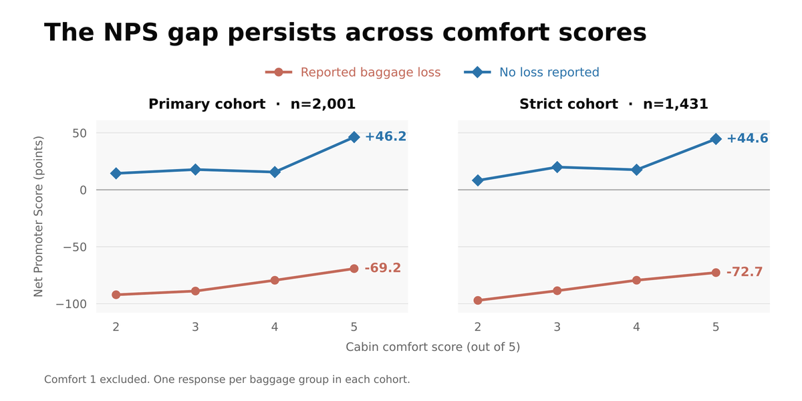

MSc university project · November 2026
Work in progress
SkyRoute Airways
Where should SkyRoute investigate first: baggage recovery or cabin experience? Passenger experience analytics and a machine-learning proof of concept, for the Python and Data Architecture for Business course of my MSc in AI for Business Transformation.
- University project
- Teaching dataset
- Not a real client
- Proof of concept
- 12,000Ticket rows
- 5CSV sources
- 2,003Survey responses
- 355Flights
01 · Problem
After the flight delay
Survey, booking, flight and reference records sat in five sources with quality issues. The aim: turn them into an analytical dataset I can verify, then ask how reported lost baggage relates to NPS among respondents on delayed flights.
02 · Data and quality
From five CSVs to 2,003 responses
Manual upload into Databricks, then direct Python and Pandas ingestion: tickets, surveys, routes, aircraft and passenger profiles. I profiled keys, duplicates, missing values and formats, and reconciled the ticket rows.
Each survey links to a ticket, the ticket to one flight and its recorded delay. Join-cardinality and date-validity checks make sure no response is counted twice; ambiguous values stay missing, not invented.
- 3,500Raw surveys
- 3,413Linked to a ticket and flight
- 2,003Complete primary responses
03 · Analytical dataset
A cohort I can check
A 17-field Parquet snapshot, verified by round trip and re-read in a separate notebook.
04 · Descriptive findings
A 103.8-point NPS gap
Respondents who reported lost baggage gave an NPS of −84.9 (n = 583), against +18.9 (n = 1,420) for those who did not. The gap appears on every route type and persists at equal reported comfort.
NPS = % promoters (9–10) minus % detractors (0–6), among valid responses. A descriptive association, not a causal effect, for the respondents analysed.
The NPS gap spans all route types
| Route type | Reported loss | Comparison on a −100 to +100 scale | No loss reported |
|---|---|---|---|
| Overall | −84.9 n = 583 | +18.9 n = 1,420 | |
| Domestic | −85.6 n = 285 | +19.3 n = 674 | |
| Short haul | −86.8 n = 152 | +19.0 n = 401 | |
| Long haul | −81.5 n = 146 | +18.3 n = 345 |

The gap holds in every supported cell
| Comfort 1 | 2 | 3 | 4 | 5 | |
|---|---|---|---|---|---|
| Route type | |||||
| Domestic | fewer than 10 flights per group | −95.8 +22.6 | −91.8 +20.6 | −78.3 +11.5 | −63.6 +39.6 |
| Short haul | fewer than 10 flights per group | fewer than 10 flights per group | −88.8 +15.3 | −84.9 +16.0 | −83.3 +48.4 |
| Long haul | fewer than 10 flights per group | −90.0 −22.7 | −83.8 +15.2 | −75.0 +23.7 | fewer than 10 flights per group |
| Aircraft manufacturer | |||||
| Airbus | fewer than 10 flights per group | −88.9 +12.3 | −86.4 +23.0 | −83.3 +15.4 | −72.7 +55.3 |
| Boeing | fewer than 10 flights per group | −93.3 +17.8 | −90.2 +11.7 | −78.5 +14.8 | −66.7 +35.8 |
| Embraer | fewer than 10 flights per group | fewer than 10 flights per group | −95.8 +20.4 | −70.0 +20.6 | fewer than 10 flights per group |
| Profile loyalty tier | |||||
| Basic | fewer than 10 flights per group | −88.0 +16.7 | −91.4 +13.1 | −75.6 +14.8 | −71.4 +37.1 |
| Silver | fewer than 10 flights per group | −100.0 −11.4 | −84.9 +17.2 | −89.4 +14.4 | −76.5 +56.0 |
| Gold | fewer than 10 flights per group | fewer than 10 flights per group | −88.9 +34.1 | −73.1 +22.2 | fewer than 10 flights per group |
| Platinum | fewer than 10 flights per group | fewer than 10 flights per group | fewer than 10 flights per group | fewer than 10 flights per group | fewer than 10 flights per group |
Comfort 1 has no cell with 10 distinct flights per baggage group, so it is hidden on small screens.
05 · ML comparison
Can post-flight data rank detractors?
Retrospective classification of detractors with scikit-learn: a baseline, a regularised logistic regression and a shallow decision tree. Flights kept intact across train and test, grouped cross-validation, the rating itself left out of the inputs.
On overall test metrics the logistic model did best. Average Precision is not accuracy.
Explore the comparison
Full holdout: 408 responses on 71 test flights, 143 of them detractors.
Reviewing 30% of responses (122 of 408): ≈102 of 143 detractors with either model, ≈43 with the baseline. Estimates average over tied scores at the review cutoff.
- Logistic regression Weighs every input and adds them up into one probability. Regularisation keeps the weights in check, and the scores come out finely graded.
- Decision tree Asks a few yes/no questions about the inputs. Everyone who ends up in the same leaf shares one probability, so many scores tie.
- Baseline Gives every response the same score and ignores the inputs. It is the bar a model has to clear.
Hypothetical demo · logistic regression
85.9% estimated chance of a detractor rating
One hypothetical passenger, other inputs fixed: switching reported loss moves the logistic score between 16.1% and 85.9%. An illustration of the model, not a forecast.
06 · Planned final pipeline
Planned · not yet implemented
The Databricks pipeline I would build
Executed so far: manual CSV load, Pandas checks, verified Parquet, charts and a held-out ML test. The next phase is a scheduled run with a batch ID. None of it is scheduled, deployed or running.
- 01 · Ingest
Schedule and land five feeds. Capture source version and run ID.
- 02 · Bronze
Retain original input snapshots so a batch can be replayed.
- 03 · Silver
Standardise types. Resolve duplicates and validate keys and dates.
- 04 · Gold
Publish route and period NPS, response counts and matching coverage.
If Silver checks fail Record the exception (source key, reason, batch) → resolve with the owner → replay the batch.
Reconcile before publication Publish only after row counts, key checks and coverage reconcile.
07 · Limits
What it does not show
- Survey responses are not representative: results hold for the respondents analysed.
- Associations are descriptive, not causal.
- The models are retrospective and use post-flight signals.
- No ROI, no automated pipeline, no model in production.
08 · My role and GenAI use
GenAI can help, but checks decide
I worked in Databricks: entered and edited the code, ran the notebooks, reviewed the results and asked for revisions of analyses and charts.
Development was GenAI-assisted, adapting the course’s scikit-learn examples. One real case: AI explained a failed index expression; I edited and reran the cell, then verified the join counts. Productivity gains remain unmeasured.
Stack
Made with
- Databricks Free Edition
- Python
- Pandas
- Parquet / PyArrow
- Matplotlib
- scikit-learn, academic PoC
Contact
Contact
Happy to talk about this work.